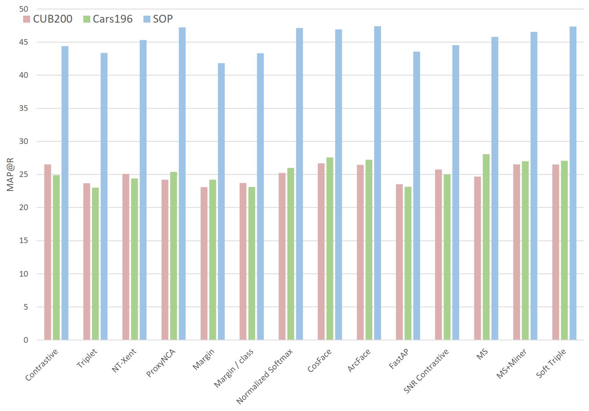

A Metric Learning Reality Check¶
This page contains additional information for the ECCV 2020 paper by Musgrave et al.
Optimization plots¶
Click on the links below to view the bayesian optimization plots. These are also available in the benchmark spreadsheet.
The plots were generated using the Ax package.
Optimal hyperparameters¶
The values below are also available in the benchmark spreadsheet.
| Loss function | CUB200 | Cars196 | SOP | CUB200 with Batch 256 |
|---|---|---|---|---|
| Contrastive pos_margin neg_margin |
-0.2000 0.3841 |
0.2652 0.5409 |
0.2850 0.5130 |
0.2227 0.7694 |
| Triplet margin |
0.0961 |
0.1190 |
0.0451 |
0.1368 |
| NTXent temperature |
0.0091 |
0.0219 |
0.0002 |
0.0415 |
| ProxyNCA proxy lr softmax_scale |
6.04e-3 13.98 |
4.43e-3 7.97 |
5.28e-4 10.73 |
2.16e-1 10.03 |
| Margin beta lr margin init beta |
1.31e-3 0.0878 0.7838 |
1.11e-4 0.0781 1.3164 |
1.82e-3 0.0915 1.1072 |
1.00e-6 0.0674 0.9762 |
| Margin / class beta lr margin init beta |
2.65e-4 0.0779 0.9796 |
4.76e-05 0.0776 0.9598 |
7.10e-05 0.0518 0.8424 |
1.32e-2 -0.0204 0.1097 |
| Normalized Softmax weights lr temperature |
4.46e-3 0.1087 |
1.10e-2 0.0886 |
5.46e-4 0.0630 |
7.20e-2 0.0707 |
| CosFace weights lr margin scale |
2.53e-3 0.6182 100.0 |
7.41e-3 0.4324 161.5 |
2.16e-3 0.3364 100.0 |
3.99e-3 0.4144 88.23 |
| ArcFace weights lr margin scale |
5.13e-3 23.22 100.0 |
7.39e-06 20.52 49.50 |
2.01e-3 18.63 220.3 |
3.95e-2 23.14 78.86 |
| FastAP num_bins |
17 |
27 |
16 |
86 |
| SNR Contrastive pos_margin neg_margin regularizer_weight |
0.3264 0.8446 0.1382 |
0.1670 0.9337 0 |
0.3759 1.0831 0 |
0.1182 0.6822 0.4744 |
| Multi Similarity alpha beta base |
0.01 50.60 0.56 |
14.35 75.83 0.66 |
8.49 57.38 0.41 |
0.01 46.85 0.82 |
| Multi Similarity + Miner alpha beta base epsilon |
17.97 75.66 0.77 0.39 |
7.49 47.99 0.63 0.72 |
15.94 156.61 0.72 0.34 |
11.63 55.20 0.85 0.42 |
| SoftTriple weights lr la gamma reg_weight margin |
5.37e-05 78.02 58.95 0.3754 0.4307 |
1.40e-4 17.69 19.18 0.0669 0.3588 |
8.68e-05 100.00 47.90 N/A 0.3145 |
1.06e-4 72.12 51.07 0.4430 0.6959 |
Examples of unfair comparisons in metric learning papers¶
Papers that use a better architecture than their competitors, but don’t disclose it¶
-
Sampling Matters in Deep Embedding Learning (ICCV 2017)
- Uses ResNet50, but all competitors use GoogleNet
-
Deep Metric Learning with Hierarchical Triplet Loss (ECCV 2018)
- Uses BN-Inception, but all competitors use GoogleNet
-
Multi-Similarity Loss with General Pair Weighting for Deep Metric Learning (CVPR 2019)
- Uses BN-Inception. Claims better performance than ensemble methods, but the ensemble methods use GoogleNet.
-
Deep Metric Learning to Rank (CVPR 2019)
- Uses ResNet50. In their SOP table, only 1 out of 11 competitor methods use ResNet50. All others use BN-Inception or GoogleNet. Claims better performance than ensemble methods, but the ensemble methods use GoogleNet.
-
Divide and Conquer the Embedding Space for Metric Learning (CVPR 2019)
- Uses ResNet50. In their Cars196 and SOP tables, only 1 out of 15 competitor methods use ResNet50. The rest use GoogleNet or BN-Inception. The same is true for their CUB200 results, but in that table, they re-implement two of the competitors to use ResNet50.
-
SoftTriple Loss: Deep Metric Learning Without Triplet Sampling (ICCV 2019)
- Uses BN-Inception. Compares with N-pairs and HDC, but doesn’t mention that these use GoogleNet. They only mention the competitors’ architectures when the competitors use an equal or superior network. Specifically, they mention that the Margin loss uses ResNet50, and HTL uses BN-Inception.
-
Deep Metric Learning with Tuplet Margin Loss (ICCV 2019)
- Uses ResNet50. In their SOP table, only 1 out of 10 competitors use ResNet50, and in their CUB200 and Cars196 tables, only 1 out of 8 competitors use ResNet50. The rest use GoogleNet or BN-Inception. They also claim better performance than ensemble methods, but the ensemble methods use GoogleNet.
Papers that use a higher dimensionality than their competitors, but don’t disclose it¶
-
Sampling Matters in Deep Embedding Learning (ICCV 2017)
- Uses size 128. CUB200 table: 4 out of 7 use size 64. Cars196: 4 out of 5 use size 64. SOP: 4 out of 7 use size 64.
-
Deep Metric Learning with Hierarchical Triplet Loss (ECCV 2018)
- Uses size 512. The top two non-ensemble competitor results use size 384 and 64.
-
Ranked List Loss for Deep Metric Learning (CVPR 2019)
- Uses size 512 or 1536. For all 3 datasets, 5 out of the 6 competitor results use size 64.
-
Deep Metric Learning with Tuplet Margin Loss (ICCV 2019)
- Uses size 512. The only competing method that uses the same architecture, uses size 128.
Papers that claim to do a simple 256 resize and 227 or 224 random crop, but actually use the more advanced RandomResizedCrop method¶
-
Multi-Similarity Loss with General Pair Weighting for Deep Metric Learning (CVPR 2019)
-
Divide and Conquer the Embedding Space for Metric Learning (CVPR 2019)
-
MIC: Mining Interclass Characteristics for Improved Metric Learning (ICCV 2019)
-
SoftTriple Loss: Deep Metric Learning Without Triplet Sampling (ICCV 2019)
Papers that use a 256 crop size, but whose competitor results use a smaller 227 or 224 size¶
-
Metric Learning With HORDE: High-Order Regularizer for Deep Embeddings (ICCV 2019)
- Although they do reimplement some algorithms, and the reimplementations presumably use a crop size of 256, they also compare to paper results that use 227 or 224.
Papers that omit details¶
-
Multi-Similarity Loss with General Pair Weighting for Deep Metric Learning (CVPR 2019)
- Freezes batchnorm parameters in their code, but this is not mentioned in the paper.
-
Proxy Anchor Loss for Deep Metric Learning (CVPR 2020)
- Uses the sum of Global Average Pooling (GAP) and Global Max Pooling (GMP). Competitor papers use just GAP. This is not mentioned in the paper.
Examples to back up other claims in section 2.1¶
“Most papers claim to apply the following transformations: resize the image to 256 x 256, randomly crop to 227 x 227, and do a horizontal flip with 50% chance”. The following papers support this claim¶
- Deep Metric Learning via Lifted Structured Feature Embedding (CVPR 2016)
- Deep Spectral Clustering Learning (ICML 2017)
- Deep Metric Learning via Facility Location (CVPR 2017)
- No Fuss Distance Metric Learning using Proxies (ICCV 2017)
- Deep Metric Learning with Angular Loss (ICCV 2017)
- Sampling Matters in Deep Embedding Learning (ICCV 2017)
- Deep Adversarial Metric Learning (CVPR 2018)
- Classification is a Strong Baseline for Deep Metric Learning (BMVC 2019)
- Hardness-Aware Deep Metric Learning (CVPR 2019)
- Deep Asymmetric Metric Learning via Rich Relationship Mining (CVPR 2019)
- Stochastic Class-based Hard Example Mining for Deep Metric Learning (CVPR 2019)
- Ranked List Loss for Deep Metric Learning (CVPR 2019)
- Multi-Similarity Loss with General Pair Weighting for Deep Metric Learning (CVPR 2019)
- Deep Metric Learning to Rank (CVPR 2019)
- Divide and Conquer the Embedding Space for Metric Learning (CVPR 2019)
- MIC: Mining Interclass Characteristics for Improved Metric Learning (ICCV 2019)
- SoftTriple Loss: Deep Metric Learning Without Triplet Sampling (ICCV 2019)
- Proxy Anchor Loss for Deep Metric Learning (CVPR 2020)
Papers categorized by the optimizer they use¶
-
SGD:
- Deep Spectral Clustering Learning (ICML 2017)
- Deep Metric Learning with Angular Loss (ICCV 2017)
- Hard-Aware Deeply Cascaded Embedding (ICCV 2017)
- Deep Metric Learning with Hierarchical Triplet Loss (ECCV 2018)
- Deep Asymmetric Metric Learning via Rich Relationship Mining (CVPR 2019)
- Ranked List Loss for Deep Metric Learning (CVPR 2019)
- Classification is a Strong Baseline for Deep Metric Learning (BMVC 2019)
- Deep Metric Learning with Tuplet Margin Loss (ICCV 2019)
-
RMSprop:
-
Adam:
- Improved Deep Metric Learning with Multi-class N-pair Loss Objective (Neurips 2016)
- Sampling Matters in Deep Embedding Learning (ICCV 2017)
- Hybrid-Attention based Decoupled Metric Learning for Zero-Shot Image Retrieval (CVPR 2019)
- Stochastic Class-based Hard Example Mining for Deep Metric Learning (CVPR 2019)
- Multi-Similarity Loss with General Pair Weighting for Deep Metric Learning (CVPR 2019)
- Deep Metric Learning to Rank (CVPR 2019)
- Divide and Conquer the Embedding Space for Metric Learning (CVPR 2019)
- SoftTriple Loss: Deep Metric Learning Without Triplet Sampling (ICCV 2019)
- Metric Learning With HORDE: High-Order Regularizer for Deep Embeddings (ICCV 2019)
- MIC: Mining Interclass Characteristics for Improved Metric Learning (ICCV 2019)
-
AdamW
Papers that do not use confidence intervals¶
- All of the previously mentioned papers
Papers that do not use a validation set¶
- All of the previously mentioned papers
What papers report for the contrastive and triplet losses¶
The tables below are what papers have reported for the contrastive and triplet loss, using convnets. We know that the papers are reporting convnet results because they explicitly say so. For example:
- Lifted Structure Loss: See figures 6, 7, and 12, which indicate that the contrastive and triplet results were obtained using GoogleNet. These results have been cited several times in recent papers.
- Deep Adversarial Metric Learning: See tables 1, 2, and 3, and this quote from the bottom of page 6 / top of page 7: "For all the baseline methods and DAML, we employed the same GoogLeNet architecture pre-trained on ImageNet for fair comparisons"
- Hardness-Aware Deep Metric Learning: See tables 1, 2, and 3, and this quote from page 8: "We evaluated all the methods mentioned above using the same pretrained CNN model for fair comparison."
Reported Precision@1 for the Contrastive Loss¶
| Paper | CUB200 | Cars196 | SOP |
|---|---|---|---|
| Deep Metric Learning via Lifted Structured Feature Embedding (CVPR 2016) | 26.4 | 21.7 | 42 |
| Learning Deep Embeddings with Histogram Loss (NIPS 2016) | 26.4 | N/A | 42 |
| Hard-Aware Deeply Cascaded Embedding (ICCV 2017) | 26.4 | 21.7 | 42 |
| Sampling Matters in Deep Embedding Learning (ICCV 2017) | N/A | N/A | 30.1 |
| Deep Adversarial Metric Learning (CVPR 2018) | 27.2 | 27.6 | 37.5 |
| Attention-based Ensemble for Deep Metric Learning (ECCV 2018) | 26.4 | 21.7 | 42 |
| Deep Variational Metric Learning (ECCV 2018) | 32.8 | 35.8 | 37.4 |
| Classification is a Strong Baseline for Deep Metric Learning (BMVC 2019) | 26.4 | 21.7 | 42 |
| Deep Asymmetric Metric Learning via Rich Relationship Mining (CVPR 2019) | 27.2 | 27.6 | 37.5 |
| Hardness-Aware Deep Metric Learning (CVPR 2019) | 27.2 | 27.6 | 37.5 |
| Metric Learning With HORDE: High-Order Regularizer for Deep Embeddings (ICCV 2019) | 55 | 72.2 | N/A |
Reported Precision@1 for the Triplet Loss¶
| Paper | CUB200 | Cars196 | SOP |
|---|---|---|---|
| Deep Metric Learning via Lifted Structured Feature Embedding (CVPR 2016) | 36.1 | 39.1 | 42.1 |
| Learning Deep Embeddings with Histogram Loss (NIPS 2016) | 36.1 | N/A | 42.1 |
| Improved Deep Metric Learning with Multi-class N-pair Loss Objective (NIPS 2016) | 43.3 | 53.84 | 53.32 |
| Hard-Aware Deeply Cascaded Embedding (ICCV 2017) | 36.1 | 39.1 | 42.1 |
| Deep Metric Learning with Angular Loss (ICCV 2017) | 42.2 | 45.5 | 56.5 |
| Deep Adversarial Metric Learning (CVPR 2018) | 35.9 | 45.1 | 53.9 |
| Deep Variational Metric Learning (ECCV 2018) | 39.8 | 58.5 | 54.9 |
| Deep Metric Learning with Hierarchical Triplet Loss (ECCV 2018) | 55.9 | 79.2 | 72.6 |
| Hardness-Aware Deep Metric Learning (CVPR 2019) | 35.9 | 45.1 | 53.9 |
| Deep Asymmetric Metric Learning via Rich Relationship Mining (CVPR 2019) | 35.9 | 45.1 | 53.9 |
| Metric Learning With HORDE: High-Order Regularizer for Deep Embeddings (ICCV 2019) | 50.5 | 65.2 | N/A |
Frequently Asked Questions¶
Do you have slides that accompany the paper?¶
Slides are here.
Isn't it unfair to fix the model, optimizer, learning rate, and embedding size?¶
Our goal was to compare algorithms fairly. To accomplish this, we used the same network, optimizer, learning rate, image transforms, and embedding dimensionality for each algorithm. There is no theoretical reason why changing any of these parameters would benefit one particular algorithm over the rest. If there is no theoretical reason, then we can only speculate, and if we add hyperparameters based on speculation, then the search space becomes too large to explore.
Why did you use BN-Inception?¶
We chose this architecture because it is commonly used in recent metric learning papers.
Why was the batch size set to 32 for most of the results?¶
This was done for the sake of computational efficiency. Note that there are:
- 3 datasets
- 14 algorithms
- 50 steps of bayesian optmization
- 4 fold cross validation
This comes to 8400 models to train, which can take a considerable amount of time. Thus, a batch size of 32 made sense. It's also important to remember that there are real-world cases where a large batch size cannot be used. For example, if you want to train on large images, rather than the contrived case of 227x227, then training with a batch size of 32 suddenly makes a lot more sense because you are constrained by GPU memory. So it's reasonable to check the performance of these losses on a batch size of 32.
That said, there is a good theoretical reason for a larger batch size benefiting embedding losses more than classification losses. Specifically, embedding losses can benefit from the increased number of pairs/triplets in larger batches. To address this, we benchmarked the 14 methods on CUB200, using a batch size of 256. The results can be found in the supplementary section (the final page) of the paper.
Why weren't more hard-mining methods evaluated?¶
We did test one loss+miner combination (Multi-similarity loss + their mining method). But we mainly wanted to do a thorough evaluation of loss functions, because that is the subject of most recent metric learning papers.
For the contrastive loss, why is the optimal positive margin a negative value?¶
A negative value should be equivalent to a margin of 0, because the distance between positive pairs cannot be negative, and the margin does not contribute to the gradient. So allowing the hyperparameter optimization to explore negative margins was unnecesary, but by the time I realized this, it wasn't worth changing the optimization bounds.
In Figure 2 (papers vs reality) why do you use Precision@1 instead of MAP@R?¶
None of the referenced papers report MAP@R. Since Figure 2a is meant to show reported results, we had to use a metric that was actually reported, i.e. Precision@1. We used the same metric for Figure 2b so that the two graphs could be compared directly side by side. But for the sake of completeness, here's Figure 2b using MAP@R:

Reproducing results¶
Download the experiment folder¶
- Download run.py and set the default flags
- Go to the benchmark spreadsheet
- Find the experiment you want to reproduce, and click on the link in the "Config files" column.
- You'll see 3 folders: one for CUB, one for Cars, and one for SOP. Open the folder for the dataset you want to train on.
- Now you'll see several files and folders, one of which ends in "reproduction0". Download this folder. (It will include saved models. If you don't want to download the saved models, go into the folder and download just the "configs" folder.)
Command line scripts¶
Normally reproducing results is as easy as downloading an experiment folder, and using the reproduce_results flag. However, there have been significant changes to the API since these experiments were run, so there are a couple of extra steps required, and they depend on the dataset.
Additionally, if you are reproducing an experiment for the Contrastive, Triplet, or SNR Contrastive losses, you have to delete the key/value pair called avg_non_zero_only in the config_loss_and_miners.yaml file. And for the Contrastive loss, you should delete the use_similarity key/value pair in config_loss_and_miners.yaml.
In the following code, <experiment_to_reproduce> refers to the folder that contains the configs folder.
- CUB200:
python run.py --reproduce_results <experiment_to_reproduce> \
--experiment_name <your_experiment_name> \
--split_manager~SWAP~1 {MLRCSplitManager: {}} \
--merge_argparse_when_resuming
- Cars196:
python run.py --reproduce_results <experiment_to_reproduce> \
--experiment_name <your_experiment_name> \
--config_dataset [default, with_cars196] \
--config_general [default, with_cars196] \
--split_manager~SWAP~1 {MLRCSplitManager: {}} \
--merge_argparse_when_resuming
- Stanford Online Products
python run.py --reproduce_results <experiment_to_reproduce> \
--experiment_name <your_experiment_name> \
--config_dataset [default, with_sop] \
--config_general [default, with_sop] \
--split_manager~SWAP~1 {MLRCSplitManager: {}} \
--merge_argparse_when_resuming
- CUB200 with batch size 256:
python run.py --reproduce_results <experiment_to_reproduce> \
--experiment_name <your_experiment_name> \
--config_general [default, with_256_batch] \
--split_manager~SWAP~1 {MLRCSplitManager: {}} \
--merge_argparse_when_resuming
If you don't have the datasets and would like to download them into your dataset_root folder, you can add this flag to the CUB commands:
--dataset~OVERRIDE~ {CUB200: {download: True}}
Likewise, for the Cars196 and Stanford Online Products commands, replace the --config_dataset flag with:
--dataset~OVERRIDE~ {Cars196: {download: True}}
or
--dataset~OVERRIDE~ {StanfordOnlineProducts: {download: True}}
Run evaluation on the test set¶
After training is done, you can get the "separate 128-dim" test set performance:
python run.py --experiment_name <your_experiment_name> \
--evaluate --splits_to_eval [test]
and the "concatenated 512-dim" test set performance:
python run.py --experiment_name <your_experiment_name> \
--evaluate_ensemble --splits_to_eval [test]
Once evaluation is done, you can go to the meta_logs folder and view the results.